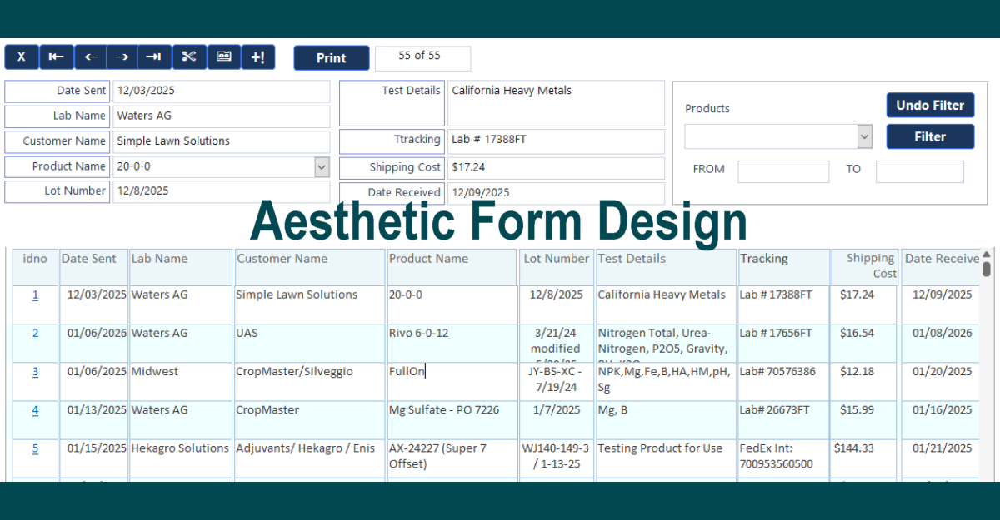

Advanced Automation Tricks for Developers of Access 365
While Microsoft Access 365 is often viewed as a basic desktop database tool, unlocking its hidden developer capabilities transforms it into a fast, resilient, local-first application engine. Standard developers usually stick to basic wizards, simple macros, and default linked tables. However, at DataCore Systems, we have made full use of these advanced developer capabilities in our front-end applications to build robust, enterprise-grade systems that deliver modern performance.

01. Dynamic Direct ODBC & Pass-Through Queries
Instead of standard linked tables that slow down networks, we write dynamic T-SQL Pass-Through queries in VBA. This offloads complex filtering and joins directly to SQL Server for sub-second execution speeds.
02. Custom REST API & Automation Pipelines
Using WinHttp and native VBA JSON parsers, our desktop front-ends connect directly to external REST APIs. This enables automated email notifications, SMS alerts, and seamless background cloud synchronization.
03. Unbound Forms with Transactional Safety
Moving beyond bound forms, we construct fully unbound interfaces using explicit VBA transactions (BeginTrans, CommitTrans). This guarantees atomic writes and prevents data corruption during unexpected network drops.
04. Windows API Hooks for Modern UI/UX
By leveraging native user32.dll and gdi32.dll function calls, we replace outdated default Access visuals with sleek borderless windows, dynamic dark/light theme switching, and granular styling control.
05. In-Memory Caching & Local-First Sync
We load disconnected ADODB recordsets into memory upon application startup. The app reads static reference data instantly and queues background edits for asynchronous server sync operations.
06. Automated Self-Healing & Compact Routines
Embedded background routines continuously monitor database file bloat, automatically repair broken DSN-less connections, and trigger silent background backups to safeguard operational integrity.
Looking to modernize or optimize your Microsoft Access applications? DataCore Systems specializes in high-performance VBA automation, SQL Server backends, and local-first architecture.
Get in Touch